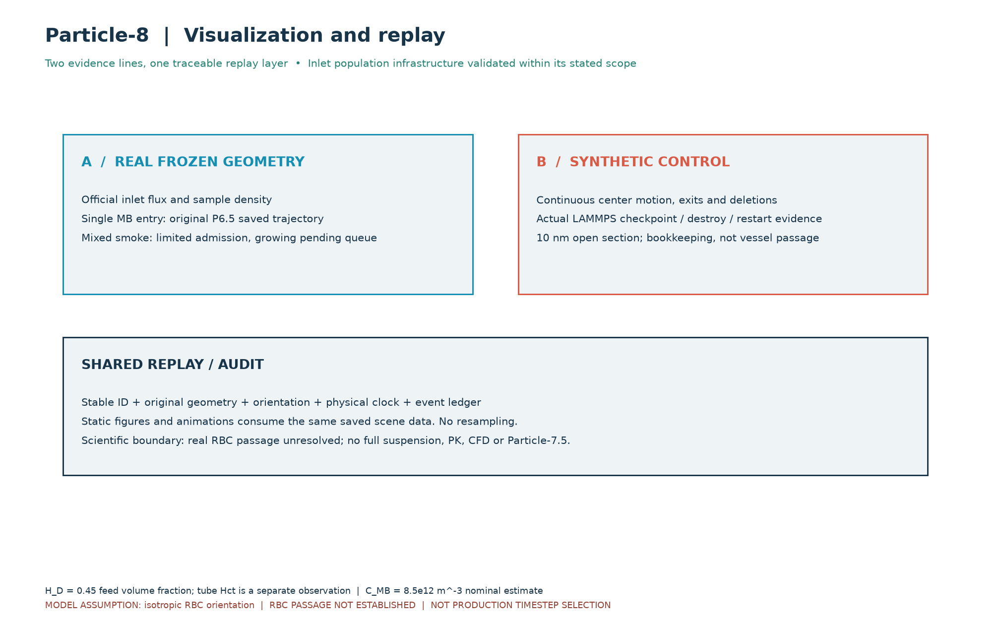
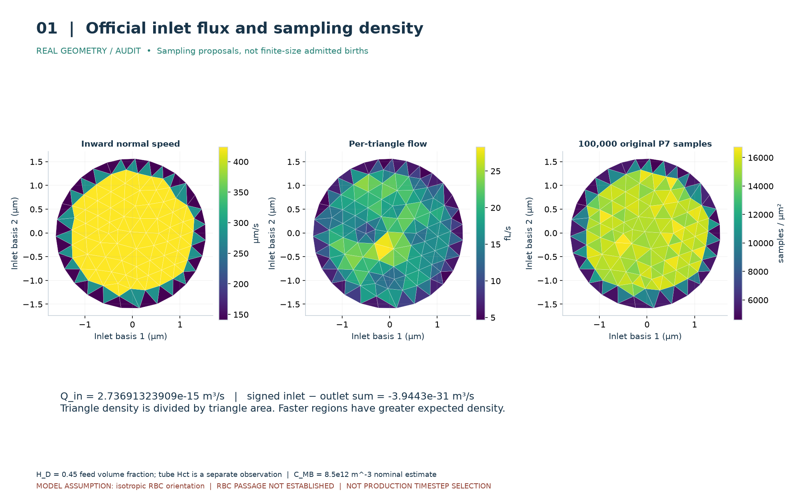
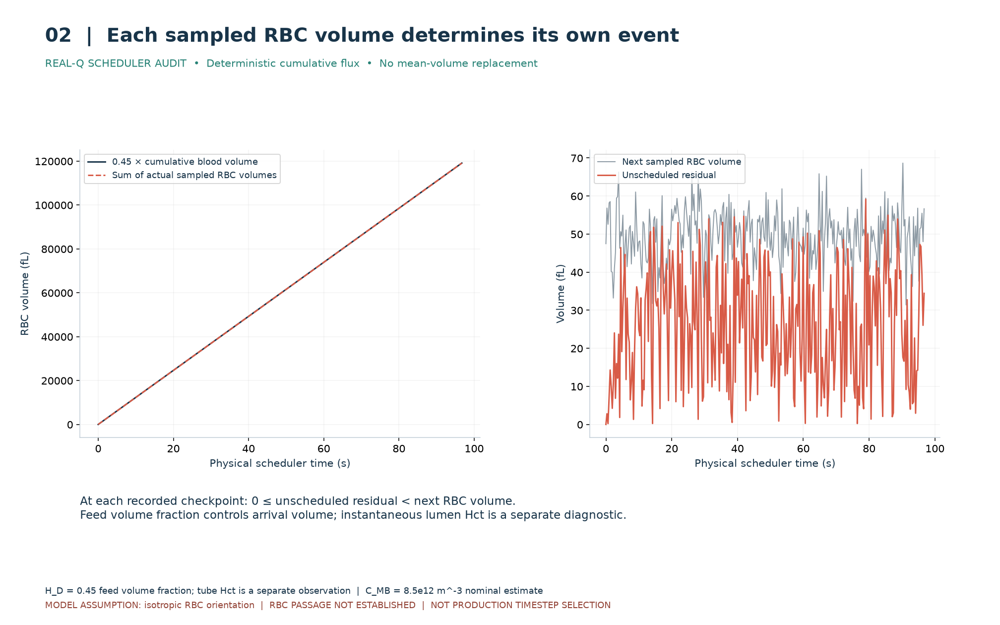
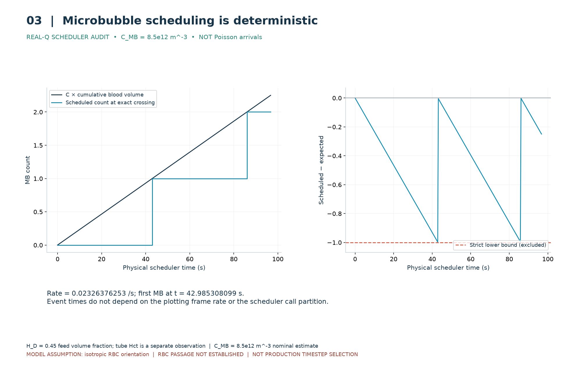
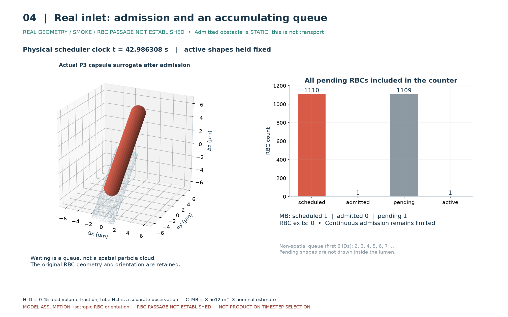
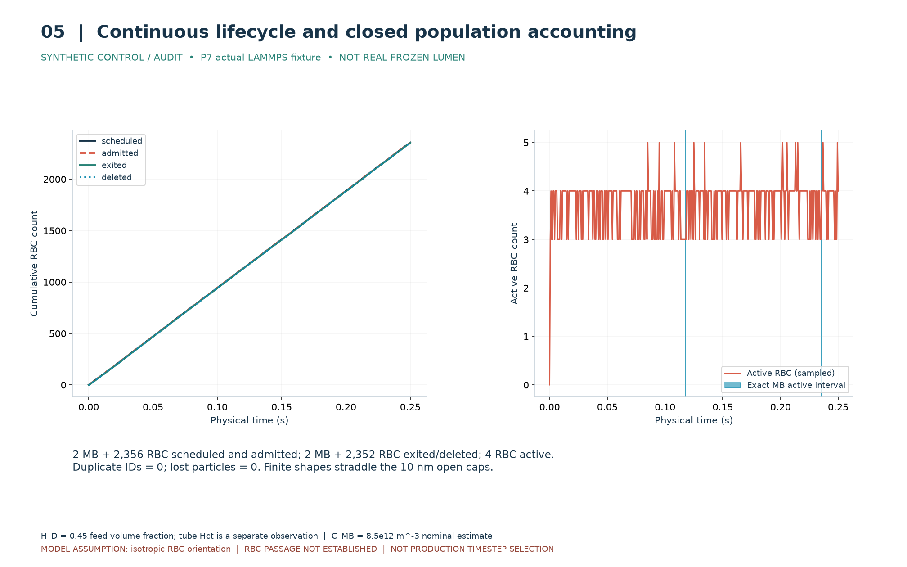
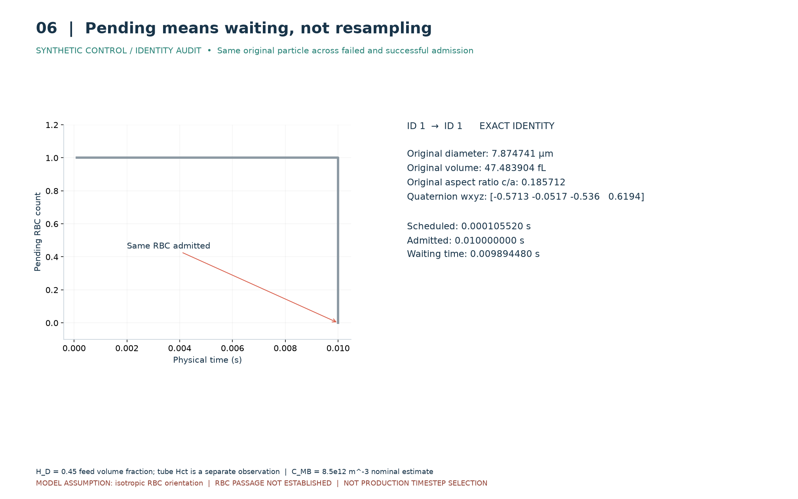
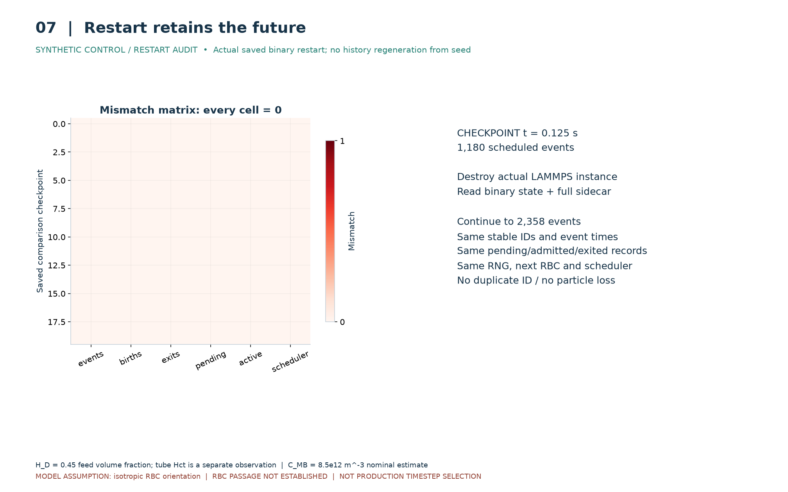
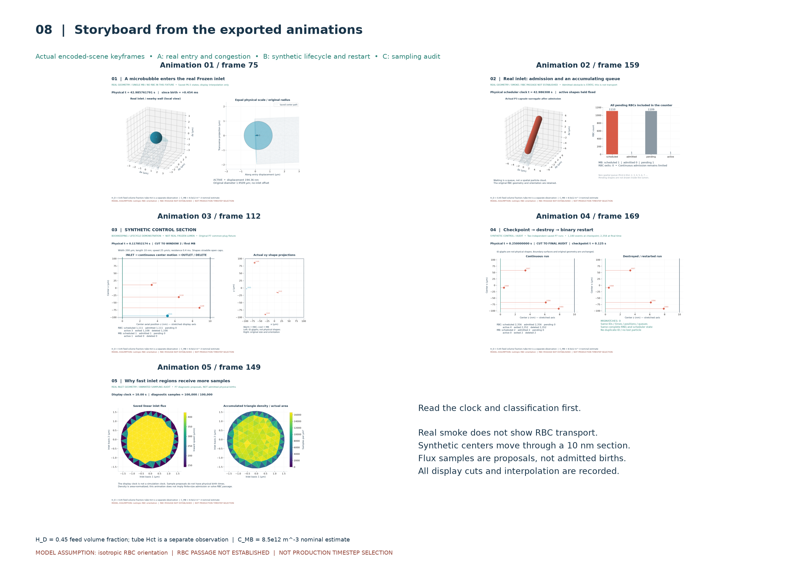
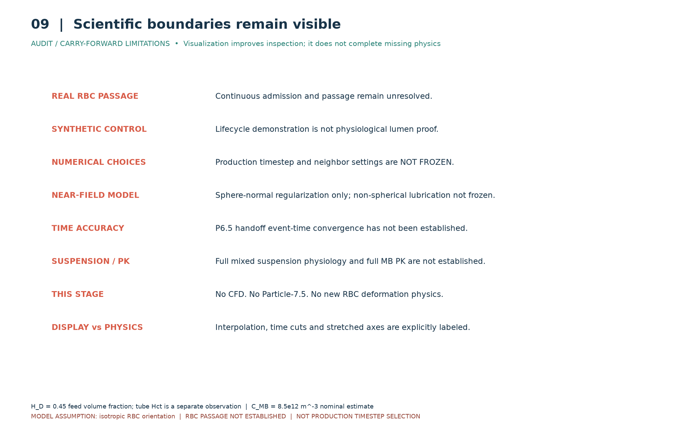

动画 01
真实 Frozen 入口；单 MB 在原入口面出生，无人工偏移，按原 P6.5 保存状态在 1 ms 内移动 0.440609 µm。左右分别为局部 3D 和等物理尺度投影。开始前 0.1 ms 留空。中间帧只是显示插值，没有新增动力学证据。
真实 RBC 连续通行仍未建立。合成控制区动画验证生命周期；真实混合 smoke 展示静态接纳障碍和排队。H_D=0.45 为入口体积流率比例，C_MB 为名义浓度假设。
真实 Frozen 入口；单 MB 在原入口面出生，无人工偏移，按原 P6.5 保存状态在 1 ms 内移动 0.440609 µm。左右分别为局部 3D 和等物理尺度投影。开始前 0.1 ms 留空。中间帧只是显示插值，没有新增动力学证据。
真实 Frozen 混合入口接纳 smoke；时钟推进、预约队列增长，唯一已接纳的 P3 胶囊替代 RBC 保持静止。最终 RBC 1110/1/1109、MB 1/0/1（预约/接纳/排队）。队列在图表中显示，不伪造其空间位置。
合成控制区，宽 200 µm、长 10 nm，公共速度 25 µm/s，中心驻留时间 0.4 ms。三段真实物理时间窗口展示启动、第一只及第二只 MB；窗口之间明示剪切，末帧切到 0.25 s 记账。左图拉伸主流向并用 ID 图标表示中心，右图保留原尺寸、原姿态的 xy 投影。有限形状跨越开口端面，不能称为完整粒子通过血管。
独立的连续与重启保存数据分屏回放，跨越 0.125 s checkpoint。原 P7 确实销毁 LAMMPS 并读取二进制；本阶段读已有证据，不重新演出或生成随机历史。逐帧位置、ID、队列与计数一致，完整 scheduler/RNG 等字段也逐项比较。
真实入口几何上的采样诊断。100000 个原 P7 候选点逐步累积，按三角片面积归一化为密度。10 s 是播放时钟，不是物理出生时钟；这些候选点不是已接纳粒子。
两条证据线和共用回放层分开；真实几何结果没有被合成动画代替。

真实入口速度、三角片通量与面积归一化采样密度并列；质量差保留原值。

累计目标与每只原 RBC 的体积之和一致，残差小于下一只原样本体积。

MB 在累计数量跨整数时预约，误差严格大于 −1；不是 Poisson。

真实入口排队达到 1109 个 RBC 和 1 个 MB；静态已接纳形状与排队计数分开。

合成生命周期闭合，最终 4 个 RBC 活动；退出与删除同步，ID 不复用。

等待前后 ID、几何、体积、四元数、来源完全一致，没有重抽。

六类重启字段全部相等；0.125 s 后未来事件保持一致。

从实际动画场景抽取关键帧；不是另外绘制的示意结果。

真实 RBC passage、生产参数、完整悬浮液、PK 等边界醒目标明。
